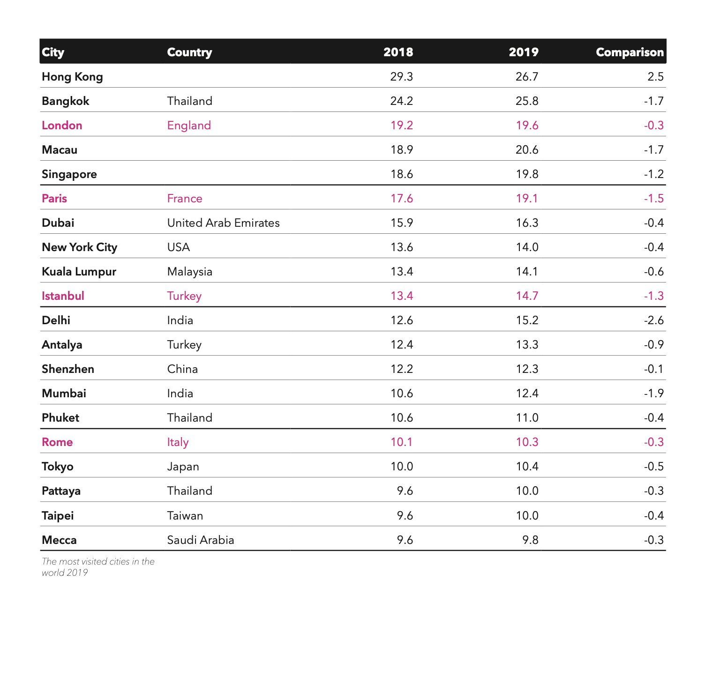

So you’re thinking about taking advanced typography, but you’re not sure what’s about.
I have some samples of student work for you:
Our first assignment is a pixel font, where you will learn more about type design and type anatomy.
Von Garcia Balanon, Fall 2021
In this assignment, you’ll work on a webpage and a poster to compare similar typefaces.
Kristy Leung, Barrett Lo, CJ Tio, Fall 2021
In this assignment, you will research the work of an assigned designer and design a poster using grids to show their work.
Kevin Shin-Wheeler, Fall 2021
In this assignment, you’ll learn some InDesign and some type tricks to make your tables look better.

Alena Robinson, Fall 2021
For the final assignment, you’ll showcase a type family of your choice in a eight‑page pamphlet.
Layla Stoutenborough, Fall 2021
Seriously, it’s super fun!